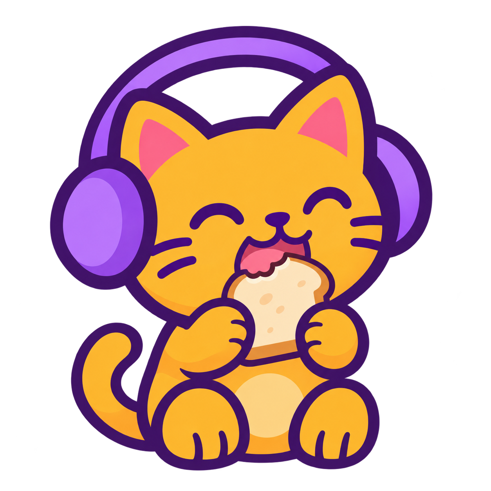
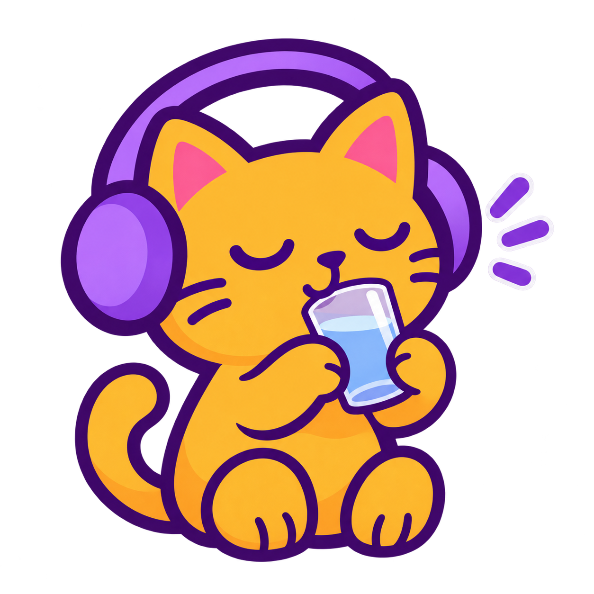
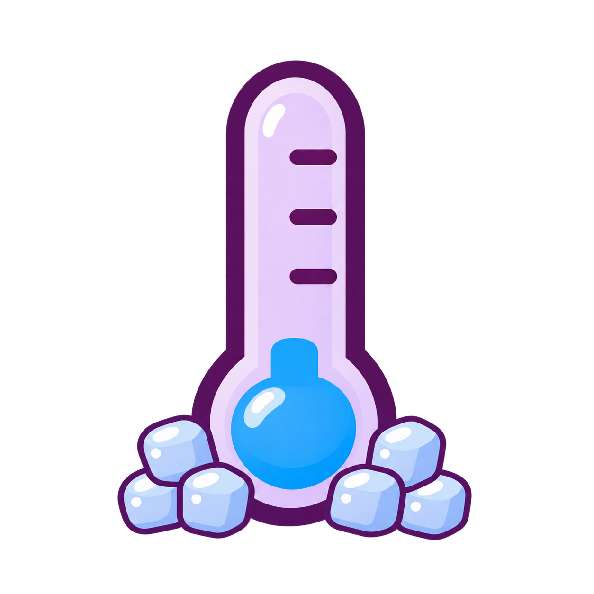
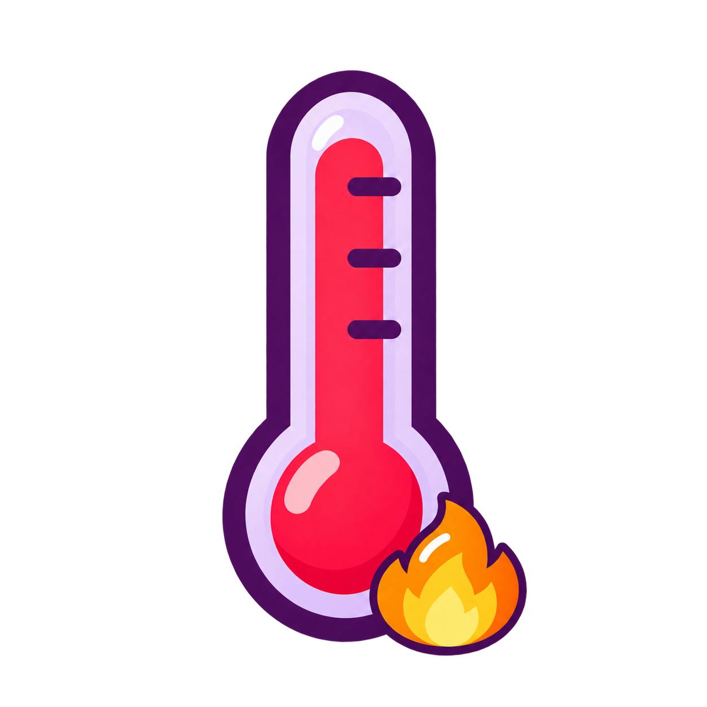
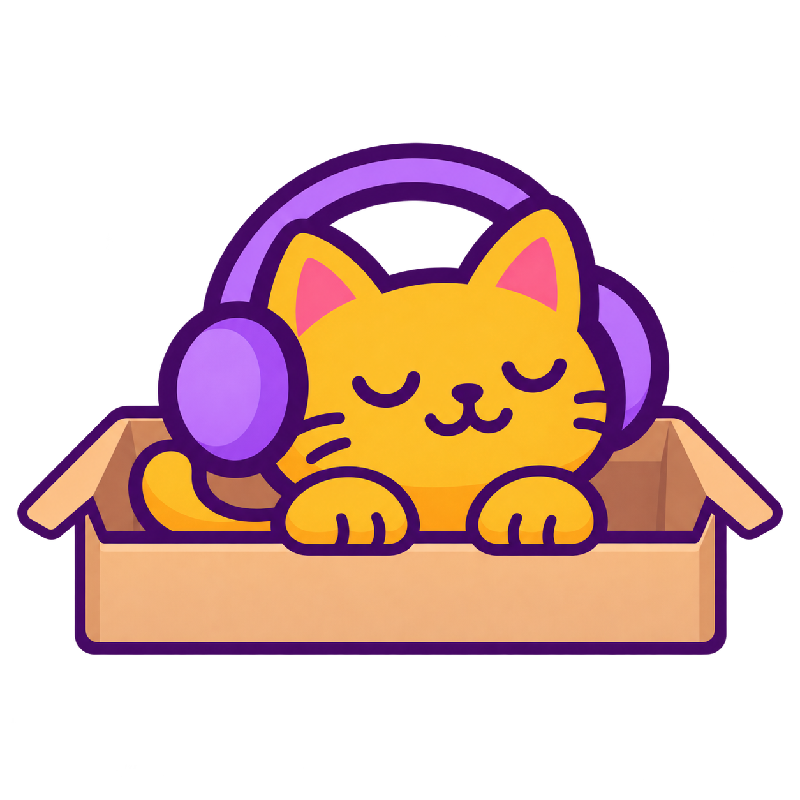
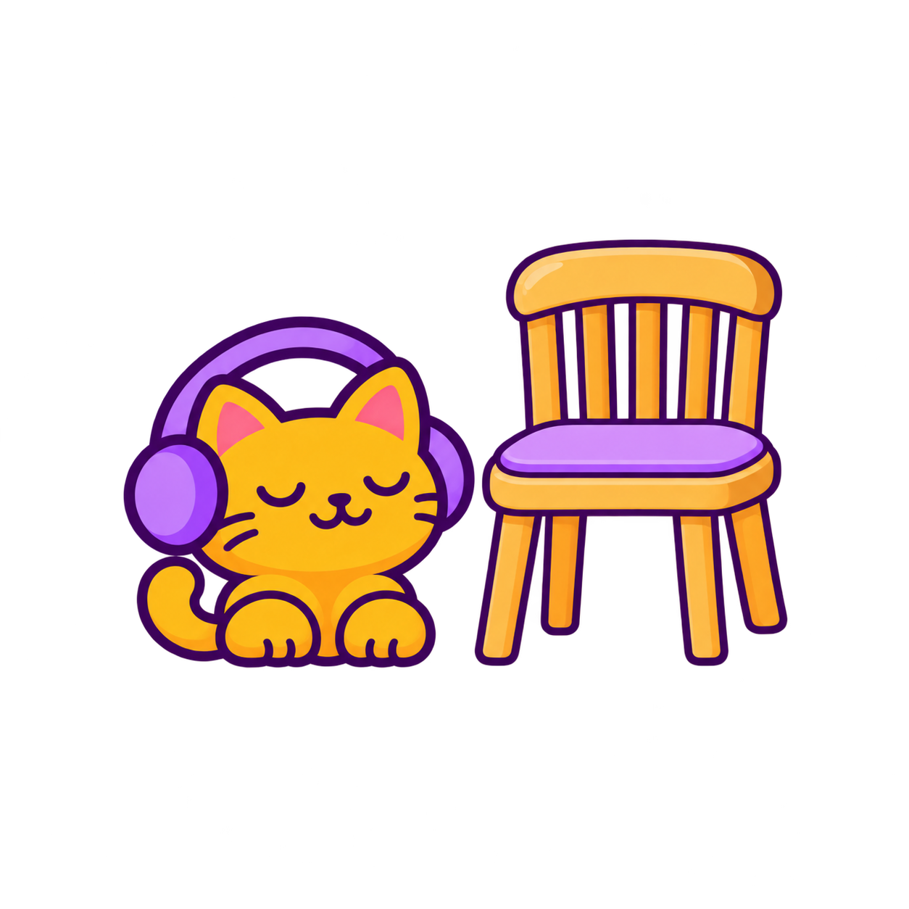
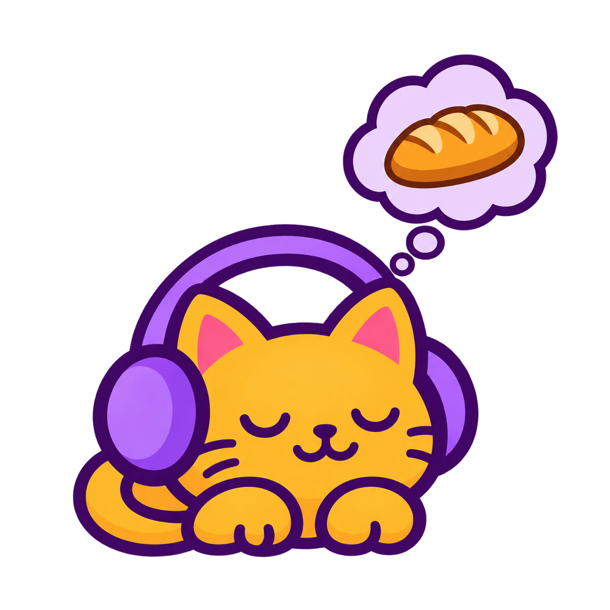
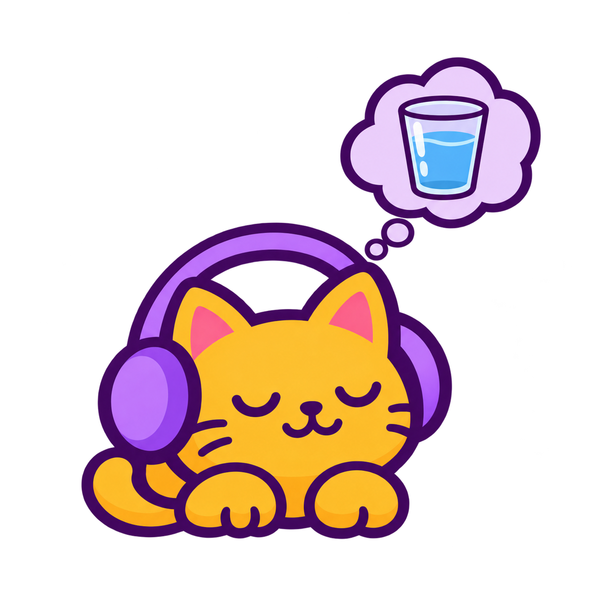

Basic Spanish level 1 · pictures
15 pictures: nine new illustrations and six approved reuses. Shown at 145px.
Pictures, words and contextual audio

comerEat · New illustration
beberDrink · New illustration grandeBig · Approved artwork reuse
grandeBig · Approved artwork reuse pequeñoSmall · Approved artwork reuse
pequeñoSmall · Approved artwork reuse
fríoCold · New illustration
calienteHot · New illustration abiertoOpen · Approved artwork reuse
abiertoOpen · Approved artwork reuse cerradoClosed · Approved artwork reuse
cerradoClosed · Approved artwork reuse
dentro deInside · New illustration encima deOn top of · Approved artwork reuse
encima deOn top of · Approved artwork reuse debajo deUnder · Approved artwork reuse
debajo deUnder · Approved artwork reuse
al lado deNext to · New illustration
hambreHunger · New illustration
sedThirst · New illustrationsueñoSleepiness · New illustration